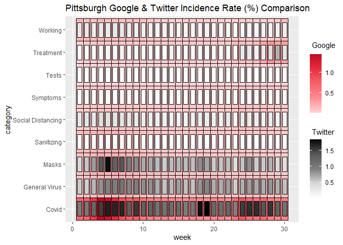
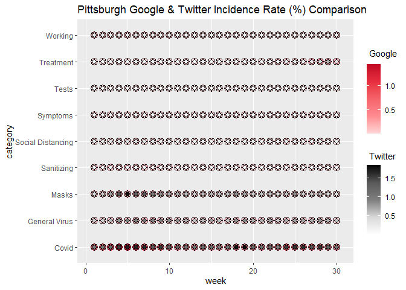
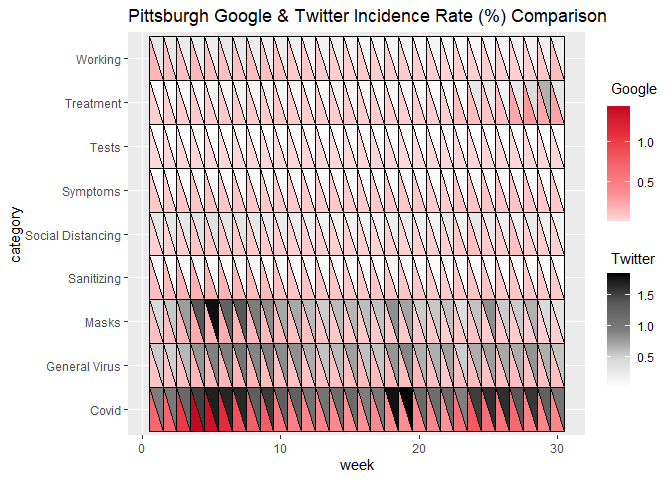

The ggDoubleHeat package is a ggplot2 extension that provides visualization for data from two different sources on a modified heat map. All functions from the package are named as geom_heat_*(). A regular heat map, which can be made by using geom_tile() from ggplot2, contains three dimensions (variables). geom_heat_*(), however, can express four dimensions of data on a single plot.
Installation
Please install the released version of ggDoubleHeat from CRAN with:
install.packages("ggDoubleHeat")Alternatively, you can install the latest development version from Github with:
# install.packages("devtools")
devtools::install_github("PursuitOfDataScience/ggDoubleHeat")Usage
For demonstration purposes, the built-in dataset pitts_tg is used to illustrate the basic usage of the package.
library(ggDoubleHeat)
library(ggplot2)
pitts_tg## # A tibble: 270 x 6
## msa week week_start category Twitter Google
## <chr> <int> <date> <chr> <dbl> <dbl>
## 1 Pittsburgh 1 2020-06-01 Covid 0.965 0.681
## 2 Pittsburgh 1 2020-06-01 General Virus 0.538 0.0982
## 3 Pittsburgh 1 2020-06-01 Masks 0.466 0.117
## 4 Pittsburgh 1 2020-06-01 Sanitizing 0.0561 0.127
## 5 Pittsburgh 1 2020-06-01 Social Distancing 0.294 0.0386
## 6 Pittsburgh 1 2020-06-01 Symptoms 0.0457 0.0770
## 7 Pittsburgh 1 2020-06-01 Tests 0.0130 0.00415
## 8 Pittsburgh 1 2020-06-01 Treatment 0.0459 0.0376
## 9 Pittsburgh 1 2020-06-01 Working 0.295 0.160
## 10 Pittsburgh 2 2020-06-08 Covid 1.01 0.707
## # ... with 260 more rowspitts_tg is a dataset that collects the 30-week period of COVID-related Google & Twitter incidence rate for 9 different categories from the Pittsburgh Metropolitan Statistical Area (MSA). For the complete information of the dataset, please type ?pitts_tg on the console.
Let’s start with geom_heat_grid():
ggplot(data = pitts_tg, aes(x = week, y = category)) +
geom_heat_grid(outside = Google, inside = Twitter) +
ggtitle("Pittsburgh Google & Twitter Incidence Rate (%) Comparison")
Now changing geom_heat_grid() to geom_heat_circle():
ggplot(data = pitts_tg, aes(x = week, y = category)) +
geom_heat_circle(outside = Google, inside = Twitter) +
ggtitle("Pittsburgh Google & Twitter Incidence Rate (%) Comparison")
Let’s use geom_heat_tri():
ggplot(data = pitts_tg, aes(x = week, y = category)) +
geom_heat_tri(lower = Google, upper = Twitter) +
ggtitle("Pittsburgh Google & Twitter Incidence Rate (%) Comparison")
To make things a bit more colorful, the most popular emoji for a given week in a given category from the respective Pittsburgh Twitter daily sample files is rendered on each component of the heatgrid by using ggtext. The following code is commented, as it takes few minutes to generate. If you would like to run it, just simply uncomment the code. But the generated heatgrid with emojis is attached below as an image.
# install.packages("ggtext")
# library(ggtext)
#
# ggplot(data = pitts_tg, aes(x = week, y = category)) +
# geom_heat_grid(outside = Google, inside = Twitter) +
# # rendering emojis using "richtext"
# annotate("richtext", x = rep(c(1:30), 9), y = rep(1:9, each = 30),
# label = pitts_emojis, label.color = NA, fill = NA, size = 0.3) +
# ggtitle("Pittsburgh Google & Twitter Incidence Rate (%) Comparison")
image
Note: pitts_emojis is the Emoji metadata built in ggDoubleHeat. Another thing worth noting is that there are some grids not having Emoji, and the reason is that there is no Emoji Unicode in the Twitter sample file.